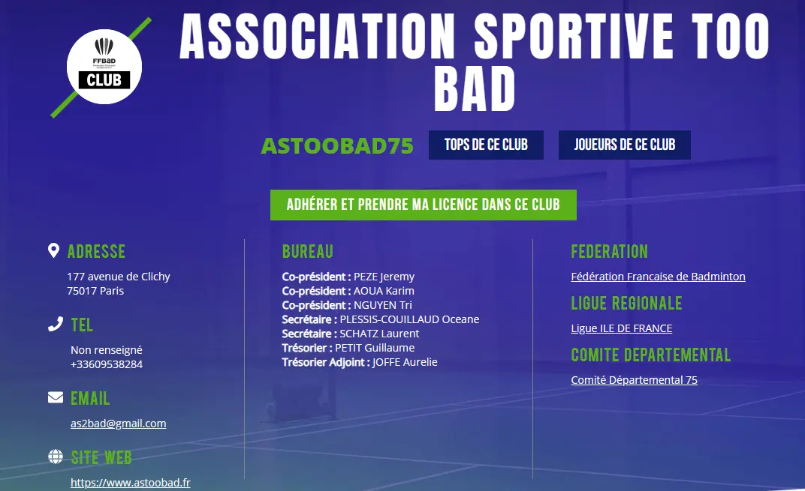

Inscription et tarifs adultes
Tarifs
| Saison 2024-2025 | Prix |
|---|---|
| Inscription | 140€ |
| Réinscription | 125€ |
| Suppléments | Prix |
|---|---|
| Interclubs (cours compétiteurs du mercredi inclus) | + 40€ |
| Entraînements(*) | + 45€ |
| Maillot | + 15€ |
(*) Accès garantis aux cours du mardi (1 semaine sur 2) pour les initiés et intermédiaires. Attention places limitées
Si vous souhaitez nous rejoindre, nous vous invitons à suivre les instructions ci-dessous en fonction de votre situation
Modalités d'inscription
Réinscriptions
Déjà membre de l'ASTOOBAD ? C'est par ici que ça se passe (n'oubliez pas de vous connecter) ! Ouvertes du 1er juillet jusqu'au 13 août 2024.
Nouvelles inscriptions
Afin de vous inscrire, nous vous invitons à vous pré-inscrire à partir du 1er août ici
- Cliquer sur "Adhérer et prendre ma licence dans ce club" 
- Compléter le formulaire d'inscription
- Remplir et lire attentivement
- Soit le certificat médical
- Doit obligatoirement être fourni pour une première demande de licence adulte
- Doit être daté de moins d'un an au moment de la demande de licence
- Est exigé toutes les trois saisons consécutives pour les adultes
- Doit de nouveau être fourni lors d'un renouvellement de licence en cas de réponse positive à une ou plusieurs questions du questionnaire de santé dans l'intervalle des trois saisons sportives.
- Soit le questionnaire de santé
- Doit être renseigné par le licencié à chaque fois qu'un certificat médical n'est pas exigé pour le renouvellement de la licence
- Doit être complété avec sérieux et sincérité
- Indiquez si vous souhaitez prendre des suppléments
- Effectuez l'empreinte bancaire (le règlement ne sera fait qu'à l'issue du test de niveau début septembre)
Selon le nombre de places restantes (suite aux ré-inscriptions) et des niveaux correspondants, nous procédons à un tirage au sort à la fin de l’été afin de sélectionner celles et ceux qui passeront le test de niveau et validerons définitivement leur inscription début septembre. Nous vous tiendrons au courant du tirage au sort par e-mail fin août.
Un dossier incomplet ne sera pas retenu pour le tirage au sort.
A très bientôt !